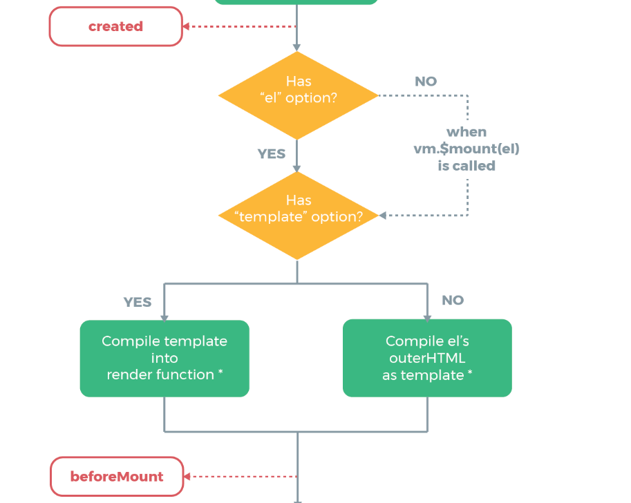
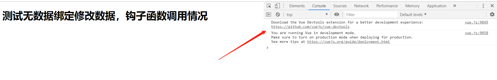
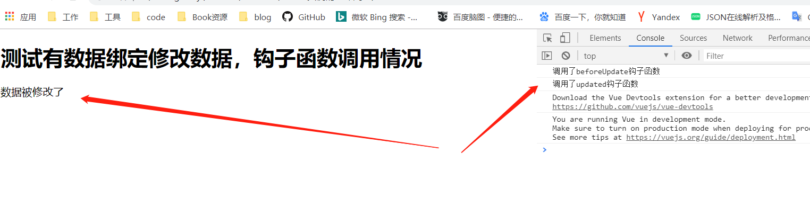
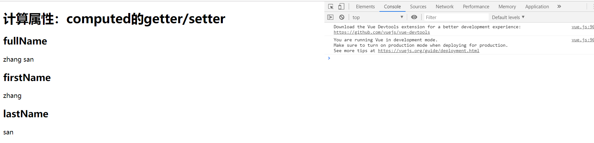

Vue安装
Vue (读音 /vjuː/，类似于 view) 是一套用于构建用户界面的渐进式框架。与其它大型框架不同的是，Vue 被设计为可以自底向上逐层应用。Vue 的核心库只关注视图层，不仅易于上手，还便于与第三方库或既有项目整合。另一方面，当与现代化的工具链以及各种支持类库结合使用时，Vue 也完全能够为复杂的单页应用提供驱动。
兼容性
Vue 不支持 IE8 及以下版本，因为 Vue 使用了 IE8 无法模拟的 ECMAScript 5 特性。但它支持所有兼容 ECMAScript 5 的浏览器。
直接用 ==<script>== 引入
直接下载并用 ==<script>== 标签引入，==Vue== 会被注册为一个全局变量。
在开发环境下不要使用压缩版本，不然你就失去了所有常见错误相关的警告!
- 开发版本包含完整的警告和调试模式
- 生产版本删除了警告，33.30KB min+gzip
CDN
对于制作原型或学习，你可以这样使用最新版本：1
<script src="https://cdn.jsdelivr.net/npm/vue"></script>
对于生产环境，我们推荐链接到一个明确的版本号和构建文件，以避免新版本造成的不可预期的破坏：
1 | <script src="https://cdn.jsdelivr.net/npm/vue@2.6.10/dist/vue.js"></script> |
如果你使用原生 ES Modules，这里也有一个兼容 ES Module 的构建文件：
1 | <script type="module"> |
你可以在 cdn.jsdelivr.net/npm/vue 浏览 NPM 包的源代码。
Vue 也可以在 unpkg 和 cdnjs 上获取 (cdnjs 的版本更新可能略滞后)。
请确认了解不同构建版本并在你发布的站点中使用生产环境版本，把 vue.js 换成 vue.min.js。这是一个更小的构建，可以带来比开发环境下更快的速度体验。
Vue入门
这里还是通过一个实例来了解Vue
<!DOCTYPE html>
<html lang="en">
<head>
<meta charset="UTF-8">
<meta name="viewport" content="width=device-width, initial-scale=1.0">
<meta http-equiv="X-UA-Compatible" content="ie=edge">
<title>Vue入门实例</title>
<!-- <script src="../vue.js"></script> -->
<script src="https://cdn.jsdelivr.net/npm/vue@2.6.10/dist/vue.js"></script>
</head>
<body>
<div id="app">
<input type="text" v-model="inputValue"/>
<button @click="handlerClick">提交</button>
<hr>
<ul>
<li v-for="(item,index) in list" :key="index">{{item}}</li>
</ul>
<hr>
<a :href="baidu">百度</a>
</div>
<script>
var app = new Vue({
el:"#app",
data:{
list:[],
inputValue:"",
baidu:"http://www.baidu.com"
},
methods: {
handlerClick:function(){
if(!this.inputValue){
alert("提交内容为空！");
return;
}
this.list.push(this.inputValue);
this.inputValue="";
}
}
});
</script>
</body>
</html>- var app = new Vue({})创建一个实例，通过el:”#app”绑定到id为“app”的div内的所有内容。
- data:{}属性是用来装载数据的，预先定义好数据，例如list和inputValue，百度三个数据对象，即使没有值也需要定义空对象或者undefined，null，Vue是响应式，预先未定义的对象不会被Vue接管。
- methods:{}是用来定义方法，例如handlerClick方法
- 指令
- v-for指令用于遍历list
- v-model用于数据双向绑定，即input框中数据改变，Vue实例对应绑定的数据也发生改变，Vue实例数据被JS改变，input框也会改变。
- 还有其他一些指令如v-if请自行查看Vue官方文档
- @click指令用于绑定事件，这里绑定了handlerClick事件，对应Vue实例methods中的handlerClick。(v-bind):baidu动态地绑定一个或多个特性，或一个组件 prop 到表达式，即将baidu绑定到上面
- @是v-on:的缩写
- :是v-bind:的缩写
- {{}}模板语法，如 {{item}}取出item的值
Vue组件
Vue全局组件
老规矩来段代码测试，可以赋值代码测试一下哦！
<!DOCTYPE html>
<html lang="en">
<head>
<meta charset="UTF-8">
<meta name="viewport" content="width=device-width, initial-scale=1.0">
<meta http-equiv="X-UA-Compatible" content="ie=edge">
<title>Vue全局组件</title>
<!-- 引入vue.js -->
<script src="https://cdn.jsdelivr.net/npm/vue@2.6.10/dist/vue.js"></script>
</head>
<body>
<div id="app">
<input v-model="inputValue"/>
<button @click="handlerClick">提交</button>
<hr>
<ul>
<!-- 调用全局组件global,将全局组件global的content与item数据绑定，index与index绑定 -->
<global v-for="(item,index) in list" :key="index" :index="index" :content="item" ></global>
</ul>
</div>
<script>
// 定义全局组件,每一个组件都是一个vue实例
Vue.component('global', {
props: ['content','index'],//组件属性
template:'<li>{{content-index}}</li>'//模板获取content-index的值
});
var app = new Vue({
el:"#app",
data:{
list:[],
inputValue:""
},
methods: {
handlerClick:function(){
if(!this.inputValue){
alert("输入为空")
return;
}
this.list.push(this.inputValue);
this.inputValue="";
}
}
});
</script>
</body>
</html>代码主要是测试全局组件调用:
定义全局组件
Vue.component('global', {
props: ['content','index'],//组件属性
template:'<li>{{content-index}}</li>'
});此处global为组件名称，props为属性，template为模板，组件定义了两个属性分别为content，index，模板为一个<li>标签，计算content-index的值,可以在vue根实例(app)中调用，此处的全局组件也是一个vue实例，根实例(app)为父组件，global为子组件。
- global组件可以以
<global>的方式在html中使用，如果你的组件名是GlobalCompontent这样的形势可以使用<global-compontent>，即大写可以转换为小写，第二个大写字母转小写后必须加上-前缀。 - :content和:index分别绑定item(list中每个元素的值)和index(当前的item的索引,即下标),: 等价于v-bind:。
- props用于向子组件(此处全局组件global)传递数据，content和index分别接收了:content的item、:index的index.
- template定义了模板(通常是一段HTML+Vue实例传过来的值，如content和index)
父组件(接管
<div id='app'>的Vue实例)向子组件(<global>)传递值,父组件中使用子组件。
Vue局部组件
将上面的代码改造使用局部组件
<!DOCTYPE html>
<html lang="en">
<head>
<meta charset="UTF-8">
<meta name="viewport" content="width=device-width, initial-scale=1.0">
<meta http-equiv="X-UA-Compatible" content="ie=edge">
<title>Vue局部组件</title>
<!-- 引入vue.js -->
<script src="https://cdn.jsdelivr.net/npm/vue@2.6.10/dist/vue.js"></script>
</head>
<body>
<div id="app">
<input v-model="inputValue"/>
<button @click="handlerClick">提交</button>
<hr>
<ul>
<!-- 调用局部组件local,将局部组件local的content与item数据绑定，index与index绑定 -->
<local v-for="(item,index) in list" :key="index" :index="index" :content="item" @delete="handlerDelete" ></local>
</ul>
</div>
<script>
//局部组件
var local = {
props: ['content','index'],//组件属性
template:'<li @click="localHandlerClick">{{content-index}}</li>',//模板
methods:{
localHandlerClick:function(){
//触发当前实例上的事件(delete)。附加参数(this.index)都会传给监听器回调。
this.$emit('delete', this.index);
}
}
};
var app = new Vue({
el:"#app",
components:{//调用局部组件，名为local，值为local对象
'local':local
},
data:{
list:[],
inputValue:""
},
methods: {
handlerClick:function(){
if(!this.inputValue){
alert("输入为空");
return;
}
this.list.push(this.inputValue);
this.inputValue="";
},
handlerDelete:function(index){
this.list.splice(index, 1);//删除数组索引index开始，1个元素
}
}
});
</script>
</body>
</html>代码主要测试局部组件调用:
定义局部组件
var local = {
props: ['content','index'],//组件属性
template:'<li>{{content-index}}</li>',//模板
methods:{
localHandlerClick:function(){
//触发当前实例上的事件(delete)。附加参数(this.index)都会传给监听器回调。
this.$emit('delete', this.index);
}
}
};调用局部组件
components:{//调用局部组件，名为local，值为local对象
'local':local
},这里定义一个js对象local，在Vue实例中使用引用components:{'local':local}引入该对象(local)，名称为local。
- 局部组件local以
<local>的方式使用 - 在子组件local中定义了一个方法
localHandlerClick，点击子组件，触发方法，这里通过this.$emit('delete', this.index)向父组件传递一个事件，事件名为delete，该事件传递了一个参数this.index。 - 父组件监听子组件的
@delete="handlerDelete"，子组件delete事件触发，传递到父组件触发@delete调用方法handlerDelete。这就是子组件向父组件传值。 - $emit事件API
Vue实例的生命周期
生命周期图
Vue实例的生命周期中有多个状态。
测试代码
<!DOCTYPE html>
<html lang="en">
<head>
<meta charset="UTF-8">
<meta name="viewport" content="width=device-width, initial-scale=1.0">
<meta http-equiv="X-UA-Compatible" content="ie=edge">
<title>Vue实例的生命周期</title>
<!-- 引入vue.js -->
<script src="https://cdn.jsdelivr.net/npm/vue@2.6.10/dist/vue.js"></script>
</head>
<body>
<div id="app">
<h1>测试生命周期</h1>
<div>{{msg}}</div>
<hr>
<h3>测试beforeUpdate和update两个钩子函数</h3>
<button @click="handlerUpdate">更新数据</button>
</div>
<script>
var app = new Vue({
el:"#app",
data:{
msg:"12345"
},
methods: {
handlerUpdate:function(){
this.msg=this.msg.split("").reverse().join("");
},
},//按照示意图依次调用
beforeCreate:function(){
console.log("调用了beforeCreate钩子函数");
},
created:function () {
console.log("调用了created钩子函数");
},
beforeMount: function () {
console.log('调用了beforeMount钩子函数')
},
mounted: function () {
console.log('调用了mounted钩子函数')
},
beforeUpdate: function () {
console.log("调用了beforeUpdate钩子函数")
},
updated: function () {
console.log("调用了updated钩子函数");
},
beforeDestroy: function () {
console.log("调用了beforeDestroy钩子函数")
},
destroyed: function () {
console.log("调用了destroyed钩子函数");
},
});
</script>
</body>
</html>如图所示：
初始化页面依次调用了：
- 调用了beforeCreate钩子函数
- 调用了created钩子函数
- 调用了beforeMount钩子函数
- 调用了mounted钩子函数
点击更新数据后：12345变成了54321，此时调用了：
- 调用了beforeUpdate钩子函数
- 调用了updated钩子函数
打开F12控制台
直接输入app.$destroy()主动销毁Vue实例调用：
- 调用了beforeDestroy钩子函数
- 调用了destroyed钩子函数
再探究
beforeCreate之前
初始化钩子函数和生命周期
beforeCreate和created钩子函数间的生命周期
在beforeCreate和created之间，进行数据观测(data observer) ，也就是在这个时候开始监控data中的数据变化了，同时初始化事件。
生命周期展示图
created钩子函数和beforeMount间的生命周期
对于created钩子函数和beforeMount有判断：

el选项对生命周期影响
- 有el选项
new Vue({
el: '#app',
beforeCreate: function () {
console.log('调用了beforeCreat钩子函数')
},
created: function () {
console.log('调用了created钩子函数')
},
beforeMount: function () {
console.log('调用了beforeMount钩子函数')
},
mounted: function () {
console.log('调用了mounted钩子函数')
}
})结果:
- 无el选项
new Vue({
beforeCreate: function () {
console.log('调用了beforeCreat钩子函数')
},
created: function () {
console.log('调用了created钩子函数')
},
beforeMount: function () {
console.log('调用了beforeMount钩子函数')
},
mounted: function () {
console.log('调用了mounted钩子函数')
}
})结果：
证明没有el选项，则停止编译，也意味着暂时停止了生命周期。生命周期到created钩子函数就结束了。而当我们不加el选项，但是手动执行vm.$mount(el)方法的话，也能够使暂停的生命周期进行下去，例如：
var app = new Vue({
beforeCreate: function () {
console.log('调用了beforeCreat钩子函数')
},
created: function () {
console.log('调用了created钩子函数')
},
beforeMount: function () {
console.log('调用了beforeMount钩子函数')
},
mounted: function () {
console.log('调用了mounted钩子函数')
}
})
app.$mount('#app')结果：
template

同时使用
template和HTML，查看优先级：
<h1>测试template和HTML的优先级</h1>
<div id="app">
<p>HTML优先</p>
</div>
<script>
var app = new Vue({
el:"#app",
data:{
msg:"template优先"
},
template:"<p>{{msg}}</p>",
});
</script>结果：
结论
- 如果Vue实例对象中有template参数选项，则将其作为模板编译成render函数
- 如果没有template参数选项，则将外部的HTML作为模板编译（template），也就是说，template参数选项的优先级要比外部的HTML高
- 如果1,2条件都不具备，则报错
注意
- Vue需要通过el去找对应的template，Vue实例通过el的参数，首先找自己有没有template，如果没有再去找外部的html，找到后将其编译成render函数。
- 也可以直接调用render选项，优先级：
render函数选项 > template参数 > 外部HTML。
new Vue({
el: '#app',
render (createElement) {
return (....)
}
})beforeMount和mounted钩子函数间的生命周期

beforeMount
载入前（完成了data和el数据初始化），但是页面中的内容还是vue中的占位符，data中的message信息没有被挂在到Bom节点中，在这里可以在渲染前最后一次更改数据的机会，不会触发其他的钩子函数，一般可以在这里做初始数据的获取。
Mount
载入后html已经渲染(ajax请求可以放在这个函数中)，把vue实例中的data里的message挂载到BOM节点中去
这里两个钩子函数间是载入数据。
beforeUpdate钩子函数和updated钩子函数间的生命周期
在Vue中，修改数据会导致重新渲染，依次调用beforeUpdate钩子函数和updated钩子函数
如果待修改的数据没有载入模板中，不会调用这里两个钩子函数
var app = new Vue({
el: '#app',
data: {
msg: 1
},
template: '<div id="app"><p></p></div>',
beforeUpdate: function () {
console.log('调用了beforeUpdate钩子函数')
},
updated: function () {
console.log('调用了updated钩子函数')
}
})
app.msg = 2结果：

如果绑定了数据，会调用两个钩子函数：
<h1>测试有数据绑定修改数据，钩子函数调用情况</h1>
<div id="app">
</div>
<script>
var app = new Vue({
el:"#app",
template:"<p>{{msg}}</p>",
data:{
msg:"原数据"
},
beforeUpdate: function () {
console.log("调用了beforeUpdate钩子函数")
},
updated: function () {
console.log("调用了updated钩子函数");
},
});
app.msg = "数据被修改了";
</script>结果：

注意只有写入模板的数据才会被追踪
beforeDestroy和destroyed钩子函数间的生命周期

beforeDestroy
销毁前执行（$destroy方法被调用的时候就会执行）,一般在这里善后:清除计时器、清除非指令绑定的事件等等…’)
destroyed
销毁后 （Dom元素存在，只是不再受vue控制）,卸载watcher，事件监听，子组件
总结
- beforecreate : 可以在这加个loading事件
- created ：在这结束loading，还做一些初始数据的获取，实现函数自-执行
- mounted ： 在这发起后端请求，拿回数据，配合路由钩子做一些事情
- beforeDestroy： 你确认删除XX吗？
- destroyed ：当前组件已被删除，清空相关内容
Vue计算属性与侦听器
照例看一段代码：
<!DOCTYPE html>
<html lang="en">
<head>
<meta charset="UTF-8">
<meta name="viewport" content="width=device-width, initial-scale=1.0">
<meta http-equiv="X-UA-Compatible" content="ie=edge">
<title>Vue计算属性/侦听器/方法比较</title>
<script src="https://cdn.jsdelivr.net/npm/vue@2.6.10/dist/vue.js"></script>
</head>
<body>
<div id="app">
<h1>计算属性：computed</h1>
{{fullName}}
<h1>方法：methods</h1>
{{fullName2()}}
<h1>侦听器：watch</h1>
{{watchFullName}}
<h1>年龄</h1>
{{age}}
</div>
<script>
var other = 'This is other';
var app = new Vue({
el:"#app",
data:{
firstName:"zhang",
lastName:"san",
watchFullName:"zhangsan",
age:18,
},
watch: {
firstName:function(newFirstName, oldFirstName){
console.log("firstName触发了watch,newFirstName="+newFirstName+",oldFirstName="+oldFirstName)
this.watchFullName = this.firstName+this.lastName+","+other
},
lastName:function(newLastName, oldLastName){
console.log("lastName触发了watch,newLastName="+newLastName+",oldLastName="+oldLastName)
this.watchFullName = this.firstName+this.lastName+","+other
}
},
computed: {
fullName:function(){
console.log("调用了fullName,计算了一次属性")
return this.firstName+this.lastName+","+other;
}
},
methods: {
fullName2:function(){
console.log("调用了fullName,执行了一次方法")
fullName2 = this.firstName+this.lastName+","+other;
return fullName2;
}
}
});
</script>
</body>
</html>- 初始化：

- 修改firstName/lastName/两者都修改

- 修改computed中没计算的age

- 修改Vue实例外的对象

- 修改Vue实例外对象后在修改Vue实例内的对象

- 测试结论：
- 使用computed计算了fullName属性，值为firstName+lastName。计算属性具有
缓存功能，当firstName和lastName都不改变的时候，fullName不会重新计算，比如我们改变age的值，fullName的值是不需要重新计算的. - methods并没有缓存特性，比如我们改变age的值，fullName2()方法会被执行一遍
- 当一个功能可以用上面三个方法来实现的时候，明显使用computed更合适，代码简单也有缓存特性。
- 计算属性范围在vue实例内，修改vue实例外部对象，不会重新计算渲染，但是如果先修改了vue实例外对象，在修改vue计算属性的对象，那么外部对象的值也会重新渲染。
计算属性：computed
- 使用computed计算了fullName属性，值为firstName+lastName。计算属性具有
计算属性范围在Vue实例的fullName内所管理的firstName和lastName,通常监听多个变量
侦听器：watch
监听数据变化，一般只监听一个变量或数组
使用场景
watch(异步场景)，computed(数据联动)
computed的getter/setter
请看如下代码：
<!DOCTYPE html>
<html lang="en">
<head>
<meta charset="UTF-8">
<meta name="viewport" content="width=device-width, initial-scale=1.0">
<meta http-equiv="X-UA-Compatible" content="ie=edge">
<title>Vue计算属性的getter和setter</title>
<script src="https://cdn.jsdelivr.net/npm/vue@2.6.10/dist/vue.js"></script>
</head>
<body>
<div id="app">
<h1>计算属性：computed的getter/setter</h1>
<h2>fullName</h2>
{{fullName}}
<h2>firstName</h2>
{{firstName}}
<h2>lastName</h2>
{{lastName}}
</div>
<script>
var app = new Vue({
el:"#app",
data:{
firstName:"zhang",
lastName:"san",
},
computed: {
fullName:{
get:function(){
return this.firstName+" "+this.lastName
},
set:function(value){
var list = value.split(' ');
this.firstName=list[0]
this.lastName=list[1]
}
}
},
});
</script>
</body>
</html>初始化

修改fullName

结论
- 通过这种方式，我们可以在改变计算属性值的同时也改变和计算属性相关联的属性值。
Vue组件详解
组件复用
<div id="components-demo">
<button-counter></button-counter>
<button-counter></button-counter>
<button-counter></button-counter>
</div>
<script>
// 定义一个名为 button-counter 的新组件
Vue.component('button-counter', {
data: function () {
return {
count: 0
}
},
template: '<button v-on:click="count++">You clicked me {{ count }} times.</button>'
})
new Vue({ el: '#components-demo' })
</script>组件是可复用的 Vue 实例，且带有一个名字：在这个例子中是 <button-counter>。我们可以在一个通过 new Vue 创建的 Vue 根实例中，把这个组件作为自定义元素来使用。
测试代码
<!-- 引入vue.js -->
<script src="https://cdn.jsdelivr.net/npm/vue@2.6.10/dist/vue.js"></script>
<div id="app">
<button-counter></button-counter>
<button-counter></button-counter>
<button-counter></button-counter>
</div>
<script>
// 定义一个名为 button-counter 的新组件
Vue.component('button-counter', {
data: function () {
return {
count: 0
}
},
template: '<button v-on:click="count++">You clicked me {{ count }} times.</button>'
})
new Vue({ el: '#app' })
</script>data必须是一个函数
data: {
count: 0
}不然服用时候改变一个数，所有组件的数值都会改变
data: function () {
return {
count: 0
}
}取而代之的是，一个组件的 data 选项必须是一个函数，因此每个实例可以维护一份被返回对象的独立的拷贝。
如果 Vue 没有这条规则，点击一个按钮就可能会像如下代码一样影响到其它所有实例。
注意
data属性一定为function
<script> Vue.component('row', { data: function(){ return { content: 'hello world.' } }, template: '<tr><td>{{content}}</td></tr>' }); var app = new Vue({ el: "#app" }); </script>复用时候作用域互不影响
使用ref操作Dom元素
<div id="app"> <div ref="point" @click="hello">hello world</div> </div> </body> <script> var app = new Vue({ el: "#app", methods: { hello : function(){ alert(this.$refs.point.innerHTML); } } }); </script>使用ref让div变成一个引用，名称为point，然后在hello()方法中，this.$refs表示当前Vue实例中的所有引用，this.$refs.point这里获取的是
这个DOM对象。Props
以字符串数组形式列出的 prop：props: [‘title’, ‘likes’, ‘isPublished’, ‘commentIds’, ‘author’]
但是，通常你希望每个 prop 都有指定的值类型。这时，你可以以对象形式列出 prop，这些属性的名称和值分别是 prop 各自的名称和类型：
props: {
title: String,
likes: Number,
isPublished: Boolean,
commentIds: Array,
author: Object,
callback: Function,
contactsPromise: Promise // or any other constructor
}
传递静态或动态 Prop
像这样，你已经知道了可以像这样给 prop 传入一个静态的值：
<blog-post title="My journey with Vue"></blog-post>你也知道 prop 可以通过 v-bind 动态赋值，例如：
<!-- 动态赋予一个变量的值 -->
<blog-post v-bind:title="post.title"></blog-post>
<!-- 动态赋予一个复杂表达式的值 -->
<blog-post
v-bind:title="post.title + ' by ' + post.author.name"
></blog-post>在上述两个示例中，我们传入的值都是字符串类型的，但实际上任何类型的值都可以传给一个 prop。
传入一个数字
<!-- 即便 `42` 是静态的，我们仍然需要 `v-bind` 来告诉 Vue --> <!-- 这是一个 JavaScript 表达式而不是一个字符串。--> <blog-post v-bind:likes="42"></blog-post> <!-- 用一个变量进行动态赋值。--> <blog-post v-bind:likes="post.likes"></blog-post>传入一个布尔值
<!-- 包含该 prop 没有值的情况在内，都意味着 `true`。--> <blog-post is-published></blog-post> <!-- 即便 `false` 是静态的，我们仍然需要 `v-bind` 来告诉 Vue --> <!-- 这是一个 JavaScript 表达式而不是一个字符串。--> <blog-post v-bind:is-published="false"></blog-post> <!-- 用一个变量进行动态赋值。--> <blog-post v-bind:is-published="post.isPublished"></blog-post>传入一个数组
<!-- 即便数组是静态的，我们仍然需要 `v-bind` 来告诉 Vue --> <!-- 这是一个 JavaScript 表达式而不是一个字符串。--> <blog-post v-bind:comment-ids="[234, 266, 273]"></blog-post> <!-- 用一个变量进行动态赋值。--> <blog-post v-bind:comment-ids="post.commentIds"></blog-post>传入一个对象
<!-- 即便对象是静态的，我们仍然需要 `v-bind` 来告诉 Vue --> <!-- 这是一个 JavaScript 表达式而不是一个字符串。--> <blog-post v-bind:author="{ name: 'Veronica', company: 'Veridian Dynamics' }" ></blog-post> <!-- 用一个变量进行动态赋值。--> <blog-post v-bind:author="post.author"></blog-post>传入一个对象的所有属性
如果你想要将一个对象的所有属性都作为 prop 传入，你可以使用不带参数的 v-bind (取代 v-bind:prop-name)。例如，对于一个给定的对象 post：post: { id: 1, title: 'My Journey with Vue' }下面的模板：
<blog-post v-bind="post"></blog-post>等价于：
<blog-post v-bind:id="post.id" v-bind:title="post.title" ></blog-post>